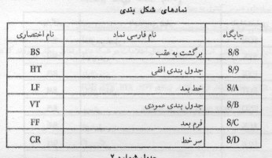
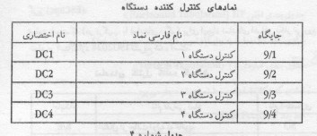
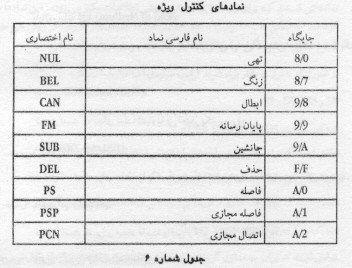
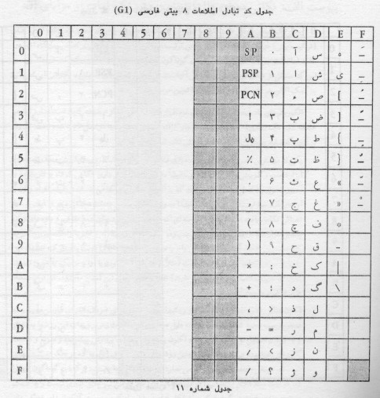

|
|
|
|
|
|
|
|
|
|
|
|
|
3342 |
|
|
|
|
|
|
|
استاندارد كد تبادل اطلاعات 8 بيتي فارسي |
|
|
|
|
|
|
|
چاپ اول |


موسسه استاندارد و تحقيقات صنعتي ايران
موسسه
استاندارد و تحقيقات صنعتي ايران تنها سازماني است در ايران كه بر طبق قانون ميتواند
استاندارد رسمي فرآورده ها را تعيين و تدوين و اجراي آنها را با كسب موافقت شوراي
عالي استاندارد اجباري اعلام نمايد. وظايف و هدفهاي موسسه عبارتست از:
(
تعيين، تدوين و نشر استانداردهاي ملي – انجام تحقيقات به منظور تدوين استاندارد
بالا بردن كيفيت كالاهاي داخلي، كمك به بهبود روشهاي توليد و افزايش كارائي صنايع
در جهت خودكفائي كشور - ترويج استانداردهاي ملي – نظارت بر اجراي استانداردهاي
اجباري – كنترل كيفي كالاهاي صادراتي مشمول استاندارد اجباري و جلوگيري از صدور
كالاهاي نامرغوب به منظور فراهم نمودن امكانات رقابت با كالاهاي مشابه خارجي و حفظ
بازارهاي بين المللي كنترل كيفي كالاهاي وارداتي مشمول استاندارد اجباري به منظور حمايت
از مصرف كنندگان و توليدكنندگان داخلي و جلوگيري از ورود كالاهاي نامرغوب خارجي
راهنمائي علمي و فني توليدكنندگان، توزيع كنندگان و مصرف كنندگان – مطالعه و تحقيق
درباره روشهاي توليد، نگهداري، بسته بندي و ترابري كالاهاي مختلف – ترويج سيستم
متريك و كاليبراسيون وسايل سنجش – آزمايش و تطبيق نمونه كالاها با استانداردهاي
مربوط، اعلام مشخصات و اظهارنظر مقايسه اي و صدور گواهينامه هاي لازم) .
موسسه
استاندارد از اعضاء سازمان بين المللي استاندارد مي باشد و لذا در اجراي وظايف خود
هم از آخرين پيشرفتهاي علمي و فني و صنعتي جهان استفاده مي نمايد و هم شرايط كلي و
نيازمنديهاي خاص كشور را مورد توجه قرار مي دهد.
اجراي
استانداردهاي ملي ايران به نفع تمام مردم و اقتصاد كشور است و باعث افزايش صادرات و
فروش داخلي و تأمين ايمني و بهداشت مصرف كنندگان و صرفه جوئي در وقت و هزينه ها و
در نتيجه موجب افزايش درآمد ملي و رفاه عمومي و كاهش قيمتها مي شود.
|
كميسيون استاندارد كامپيوتر |
||
|
رئيس |
||
|
شركت دادهپردازي ايران |
فوق ليسانس مهندسي كامپيوتر |
ارسنجاني- علي |
|
اعضاء |
||
|
مؤسسه استاندارد وتحقيقات صنعتي ايران |
ليسانس مهندسي الكترونيك |
اخوت- حسن |
|
مؤسسه استاندارد وتحقيقات صنعتي ايران |
فوق ليسانس مهندسي برق والكترونيك |
حسيني الست- حسن |
|
مؤسسه استاندارد و تحقيقات صنعتي ايران |
فوق ليسانس مديريت صنعتي |
سركاري نژاد- نادر |
|
كارخانجات پارس الكتريك |
ليسانس مهندسي الكترونيك |
سينا- ويدا |
|
شوراي عالي انفورماتيك |
فوق ليسانس سيستمهاي كامپيوتري كشور |
عابدين زاده عبادي- احد |
|
مؤسسه مطالعات و تحقيقات فرهنگي ايران |
دكترزبانشناسي كامپيوتر |
عاصي- مصطفي |
|
شركت گستره نگار |
ليسانس مهندسي صنايع |
قاضي- علي |
|
شركت مشاورين پارس سيستم |
ليسانس كامپيوتر |
كتانچي- بهروز |
|
شركت پويا |
ليسانس كامپيوتر |
محمد حسين- حميد |
|
شركت سيبستان |
ليسانس مهندسي عمران |
مهر- هومن |
|
شركت ايز ايران |
ليسانس مهندسي كامپيوتر |
نقابيان- عباس |
|
دبير |
||
|
مؤسسه استاندارد وتحقيقات صنعتي ايران |
ليسانس علوم كامپيوتر |
فصيحي- مريم |
فهرست مطالب
زبان و پيام رساني (COmmunication and Language)
لزوم تدوين استاندارد براي كد هشت بيتي
پيوست الف : نكاتي درباره علل انتخاب روش تك نمادي ومزاياي آن
پيوست ب : مختصري درباره روش استاندارد براي گسترش كد ASCII
پيوست د : چگونگي تعيين شكل همزه در تركيب با حروف ديگر
بسمه تعالي
پيشگفتار
استاندارد كد تبادل اطلاعات 8 بيتي فارسي كه بوسيله
كميسيون فني استاندارد كامپيوتر تهيه و تدوين شده و در كميته ملي استاندارد
كامپيوتر مورخ 1371/9/15
مورد تائيد قرار گرفته , اينك به استناد ماده يك قانون مواد الحاقي به قانون تاسيس مؤسسه استاندارد و تحقيقات صنعتي
ايران مصوب آذر ماه 1349
به عنوان استاندارد رسمي ايران منتشر ميگردد .
براي حفظ هماهنگي و همگامي با پيشرفتهاي
ملي و جهاني در زمينه صنايع و علوم , استانداردهاي ايران در مواقع لازم مورد تجديد
نظر قرار خواهند گرفت و هر گونه پيشنهادي كه براي اصلاح يا تكميل اين استانداردها
برسد , هنگام تجديد نظر در كميسيون فني مربوط مورد توجه واقع خواهد شد . بنابراين
براي مراجعه به استانداردهاي ايران بايد همواره از آخرين چاپ و تجديد نظر آنها
استفاده شود .
در تهيه و تدوين اين استاندارد سعي شده
است كه ضمن توجه به شرايط موجود و نيازهاي جامعه , حتي المقدور بين اين استاندارد
و آخرين استانداردهاي سازمانهاي جهاني و منطقهاي هماهنگي ايجاد شود . لذا با
بررسي امكانات و مهارتهاي موجود , اين استاندارد با استفاده از منابع زير تهيه شده
است :
- 1991-646 ISO
-1986-2022 ISO
- استاندارد ملي ايران شماره 2900
- پيشنهاد مقدماتي براي كد استاندارد
تبادل اطلاعات در فارسي سازمان برنامه و بودجه 1357
0 - مقدمه
اين استاندارد به كد تبادل اطلاعات فارسي
در حوزه كاربرد كامپيوتر ميپردازد , اما به دليل اينكه اين اطلاعات به كمك
نشانههاي نگارشي خط فارسي مبادله ميشود , شايسته است پيش از هر چيز به تمايز
اساسي ميان زبان وخط بطور اعم و ويژگيهاي خط فارسي به طور اخص اشارهاي نمائيم ,
چراكه ناديده گرفتن اين تمايز و ويژگيها پيامدهاي نادرستي را به بار خواهد آورد .
0-1 زبان و پيام رساني (Communication and Language)
نخستين ومهمترين نقش زبان را بيترديد
ميتوان ايجاد ارتباط دانست . درسادهترين شكل گفتار (Speech)
با مبادله پيام (Message) ميان دو سخنگوي زبان
برقرار كننده ارتباط است - كه البته داراي محدوديت زماني ومكاني نيز هست . از راه
فرايند پيام رساني و با بهره گيري از تواناييهاي زبان است كه انسان توانسته
اطلاعات , دانش و مهارت هاي خويش را از جائي به جائي و از نسلي به نسلي انتقال دهد
.
باتوجه به ناپايداري گفتار در بعد زمان
كاربرد خط (Writing) ، يعني به كد
درآوردن آواهاي گفتار , تلاشي براي ماندگار ساختن پيام و انتقال آن در ابعاد زمان
ومكان است . گرچه هدف از ابداع خط براي زبانهاي گوناگون نمايش آواهاي هر زبان بوده
است , اما شايد هيچ خطي را نتوان يافت كه با دقت و كارائي كامل به اين هدف رسيده
باشد . مهمتري دليل , پويايي زبان وتحول دائمي آن با گذشت زمان وسكون نسبي خط است
كه دربلند مدت باعث دوري خط از گفتار ميگردد .
از سوي ديگر مجموعه نشانها ويا نمادهائي (Symbols) كه هم اكنون به عنوان حروف الفبا (Alphabet Letters) براي زبانهاي مختلف به كار
گرفته ميشوند , داراي ويژگيهاي يكساني نيستند . دربسياري از آنها هر نشانه ( يا
حرف ) نماينده يك آواي (Sound) گفتار است مانند
نشانههاي الفباي فارسي يا بسياري از
زبانهاي اروپايي , ولي هيچ يك از اين سيستمهاي نگارشي دقيق نبوده , برابري
يك به يك ميان نشانهها و آواهاي آنها وجود ندارد . سيستمهاي نشانهاي ديگري براي
برخي از زبانها وجود دارد كه در آن هرنشانه نماينده بيش از يك آواي گفتار واغلب يك
هجا (Syllable) است و به همين دليل به آنها خط
هجائي (Syllabic Writing) مي گويند . خط ژاپني
تا حد زيادي يك خط هجائي بشمار ميرود . درخط چيني از نشانههاي زيادي براي نشان
دادن واژهها استفاده ميشود كه به همين دليل ميتوان آن را يك خط واژه نگار (Word writing or Logogram) دانست .
ميدانيم كه هرچه نشانهها تركيبيتر
باشند شماره آنها در مجموعه افزايش خواهد يافت . از همين رو خط چيني تا حدود هفتاد
هزار نشانه را در برميگيرد . گرچه برپايه يكي از اصول نظريه اطلاع (Information Theory)، ميزان اطلاع مبادله شده نسبت
عكس با احتمال وقوع هر نشانه دارد و در نتيجه اطلاعي كه يك نشانه خط چيني مبادله
ميكند به مراتب بيش از ميزان اطلاع يك حرف الفباي مثلا فارسي است , اما شماره
بسيار زياد نشانهها , يادگيري و كاربرد خط هائي مانند چيني را بسيار دشوار ميسازد
. بررسي سير تحول خط نشان ميدهد كه سيستمهاي نوشتاري از مجموعه نشانههاي تركيبي
با تعداد بسيار زياد به مجموعه هايي با نشانههاي ساده , مجزا وباتعداد محدودتري
كه نماينده آواهاي گفتار هستند , تكامل يافتهاند .
خط فارسي يك خط الفبايي است و گرچه از خط
عربي برگرفته شده است اما در گذر از قرنهاي متمادي دچار دگرگونيهاي زيادي شده و
ارزشهاي هنري وفرهنگي خاصي يافته است . همين ويژگيها نيز در زمينه چاپ و ارائه
مكانيكي اين خط مسائل ودشواريهاي را بوجود آورده است . از اين ديدگاه مهمترين
ويژگيهاي خط فارسي عبارتند از :
- لزوم رعايت معيارهاي هنري وخوشنويسي
فارسي
- چسبندگي حروف دربسياري از موارد ( اما
نه در همه موارد مانند ((: ا د ذ ر ز ژ و ))
- وجود شكلهاي گوناگون ( چند نماد ) براي
هريك از حروف برحسب قرار گرفتن آنها درآغاز , ميانه , پايان واژه ويا هنگامي كه به
تنهائي به كار روند .
- وجود شكلهاي تركيبي متفاوت به هنگام
همنشيني حروف گوناگون با يكديگر ((( مانند تركيبهاي گوناگون لام و الف :ﻼ: لا )))
- امكان اتصال حروف مختلف درسطح گوناگون (
خط كرسي متفاوت ) به يكديگر .
- وجود شكلهاي نگارشي نزديك به هم براي
آواهاي كاملا متفاوت مانند ( ب پ ت ث )
- كاربرد چند نشانهاي براي يك آواي واحد
مانند ( ذ ز ض ظ ) براي آواي / Z/ وبرعكس كاربرد يك
نشانه در برابر چند آوا مانند : ( و ) براي آواهاي / O/
/ U/ / V/
.
- اندازه متفاوت حروف چه از نظر عرض و چه
از نظر ارتفاع .
- وجود دوجهت متفاوت نوشتن براي حروف
الفبأ واعداد وارقام .
- وجود نشانههاي اضافي (Diacritics) براي برخي از آواها و ويژگيهاي
ديگر آوائي كه معمولا بربالا ياپايين نشانههاي اصلي قرار ميگيرند .
- نبود يك نشانه مشخص براي مرزبندي
واژههاي فارسي ( كاربرد چند گانه نشانه فاصله , اجازه نميدهد آن را بعنوان مرز
واژه بشناسيم ).
0-4 لزوم تدوين استاندارد براي كد
هشت بيتي
باتوجه به گسترش سريع و روز افزون
كامپيوتر ودستگاههاي گوناگون دادهپردازي كه در محيطهاي هشت بيتي اطلاعات خود را
ذخيره , بازيابي و مبادله مينمايند از يك سو و پراكندگي و گوناگوني روشهاي برخورد
با خط فارسي و مشكلات مبادله
اطلاعات به زبان فارسي از سوي ديگر , لزوم واهميت تدوين استانداردي براي تكميل
مجموعه نشانههاي آن آشكار ميشود .
هدف از تدوين اين استاندارد , تعيين
مجموعه كد هشت بيتي براي تبادل اطلاعات ميان نقاط پردازشي گوناگون است . براي
رسيدن به اين هدف نكات زير مورد توجه قرار گرفتهاند :
- تأمين نيازهاي اطلاعاتي وارتباطي جامعه
انفورماتيك كشور .
- گسترش كد هشت بيتي ISO
- فراهم ساختن مجموعه كاملتري از نشانهها و حروف الفباي فارسي
و رعايت ترتيب آنها .
-
رعايب اصل سادگي (نگاه كنيد به پيوست الف).
- ايجاد انعطاف پذيري بيشتر براي مجموعه .
- همگامي با پيشرفتهاي تكنولوژي وآينده
نگري از جمله بهره گيري از محيط هشت بيتي به جاي هفت بيتي و در نتيجه دستيابي به
سرعت و فضاي بيشتر .
- پرهيز از اعمال سليقههاي شخصي وارائه
الگوئي جامع بر اساس تحقيق و بررسي در نيازهاي واقعي جامعه انفورماتيك كشور
وپيشنهاد يك استاندارد صنعتي .
اين استاندارد براي تبادل اطلاعات فارسي و
در سيستمهاي كامپيوتري ويا هر سيستم ديگر داراي پردازنده (Processor)،
كه بتواند اطلاعات خود را در محيط هشت بيتي ذخيره و بازيابي كند مانند :
انواع كامپيوترها شامل :
ريز كامپيوترها (Micro
Computers).
ميني كامپيوترها (Mini
Computers) .
وكامپيوترهاي بزرگ (Main
Frame).
شبكههاي انتقال اطلاعات محلي (LAN , Local Area Network)
شبكههاي انتقال اطلاعات سراسري (WAN , Wide Are Network,)
پايانههاي هوشمند (Workstations)،
رسانههاي ذخيره و نمايش اطلاعات ,
ميتواند كاربرد داشته باشد .
هر چند نحوه ذخيره عملي اطلاعات ميتواند
با همان شكل تبادل اطلاعات صورت گيرد , ولي حيطه اين استاندارد محدود به تبادل
اطلاعات از طريق اين مجموعه مي باشد . بنابراين سيستمهاي نمايشي محلي (Local) ميتواند مجموعه كدهاي خود را حفظ كند و در هنگام
تبادل اطلاعات از مجموعه استاندارد استفاده نمايند .
در اين استاندارد اصطلاحات با تعاريف زير
بكار برده ميشود :
2-1 نماد
نماد به دو مفهوم و در برابر واژههاي
"Symbol " و "Character " به كار برده شده است . اين واژه در اين
استاندارد به هر گونه علامت قابل نمايش (Displayable)
ويا غير قابل نمايش (Non Displayable) اطلاق ميشود .
2-2 تركيب بيتي = كد 1(Bit Combination) :
مجموعه مرتبي از بيتها كه نماينده يك نماد
يا بخشي از نمايش يك نماد است .
2-3 مجموعه نمادهاي كد شده = كد 2(Coded Character Set) :
مجموعهاي است از قوائد روشن كه مجموعه
نمادي را ايجاد وارتباط يك به يك ميان هر نماد وتركيب بيتي آن برقرار ميسازد .
2-4 كد تبادل اطلاعات (Information Interchange Code) :
مجموعه كدهايي است كه هنگام تبادل اطلاعات
ميان سيستمهاي مختلف يا قسمتهاي مختلف يك سيستم ميتواند اطلاعات مورد نياز را
مبادله نمايد . روشن است كه بايد ميان كدهاي تبادل اطلاعات ونمادهاي نگارشي (Grphical Characters) و نمادهاي كنترل (Control Characters) برابري يك به يك وجود داشته
باشد .
2-5 كد نمايش (Display
Code):
كد نمايش هنگام نمايش اطلاعات برروي
رسانههايي بكار ميرود كه قابل رؤيت باشد مانند صفحه نمايش و چاپگر ومانند اينها
. لازم به تذكر است كه لزومي به يكسان بودن كد ذخيره سازي اطلاعات و كد نمايش آن
در درون يك سيستم نيست , ولي هنگام تبادل اطلاعات از سيستمي به سيستم ديگر
ميبايست از كد تبادل اطلاعات يكساني بهره جست .
2-6 روش تك نمادي :
روشي است كه درآن براي هر يك از حروف
الفباي فارسي , بدون توجه به شكلهاي نگارشي متفاوت آن، تنها يك كد( تركيب بيتي ) اختصاص
داده ميشود (نگاه كنيد به پيوست الف).
7-2روش چند
نمادي:
روشي
است كه درآن براي هر يك از حروف الفباي فارسي , با توجه به موقعيت آنها در واژه و
شكلهاي نگارشي جداگانه آنها , كدهاي ( تركيب بيتي )متفاوتي اختصاص داده ميشود .
2-8 حرف (Letter
Alphabet):
اين واژه براي هريك از حروف الفبا به كار
ميرود .
2-9 نشانه (Displayable
Character,Sign) :
اين واژه براي هرنماد قابل نمايش ( شامل
حروف الفبا , اعداد ونشانههاي ويژه ) بكار ميرود .
2-10 بلوك (Block):
مجموعهاي از نمادها كه ابتدا وانتهاي
آنها با نمادهاي مشخص كنندهاي مرزبندي شده است .
2-11 مكان نما (Cursor):
نشاني بر روي صفحه نمايش كه جايگاه دريافت
نشانه بعدي را مشخص ميكند .
2-12 مكاننماي مجازي (Virtual cursor) :
جايگاه فرضي چاپ يا نمايش نشانه بعدي .
اين اصطلاح بيشتر در مورد دستگاههايي كه داراي مكان نما قابل رؤيت (Cursor Visual) نيستند ( مانند چاپگر ) به كار
ميرود . در اين استاندارد اصطلاح مكان نما در برگيرنده مفهوم مكان نماي مجازي نيست
ميباشد .
نمادهاي عمومي كنترل به چهار گروه زير
تقسيم ميگردند :
3-1 نمادهاي كنترل انتقال (Transmission Control Characters):
اين نمادها به منظور كنترل يا سهولت
انتقال اطلاعات در شبكههاي ارتباطي بكار ميروند كه عبارتند از:
SOH STX ETX EOT ENQ ACK DLE NAK SYN ETB
3-1-1 آغاز سرفصل SOH
(Start of Heading):
نماد آغاز سرفصل .
3-1-2 آغاز متن SOT
(Start of Text):
نماد پايان سرفصل وآغاز متن .
3-1-3 پايان متن ETX
(End of TEXT):
نماد پايان متن .
3-1-4 پايان انتقال EOT (End of Transmission):
نماد پايان انتقال اطلاعات .
3-1-5 پرسش ENQ
(ENQUiry):
نماد درخواست اطلاعات از طرف مقابل .
3-1-6 تصديق ACK
(ACKnowledge):
نماد تصديق برقراري ارتباط يا دريافت
اطلاعات .
3-1-7 گسستگي DLE
(Data Link Escape):
نماد گسستگي زنجيره اطلاعات .
3-1-8 عدم تصديق NAK
(Negative Acknowledge):
نماد عدم تصديق برقراري ارتباط يا دريافت
اطلاع .
3-1-9 هماهنگي / درنگ SYN (SYNchronous idle):
نماد هماهنگي وحفظ ارتباط در هنگام نبود
اطلاع .
3-1-10 پايان انتقال بلوك ETB (End of Teransmission Block):
نماد پايان انتقال يك بلوك از اطلاعات .

جدول شماره 1
3-2 نمادهاي شكل بندي (Format Effectors):
اين نمادها به منظور تعيين شكل بندي
وچگونگي آرايش اطلاعات بر روي چاپگر يا صفحه نمايش بكار ميروند .
3-2-1 برگشت به عقب BS (Back Space):
نماد بازگرداندن مكان نما به يك جايگاه
پيشتر .
3-2-2 جدول بندي افقي VT (Horizontal Tabulation):
نمادي كه مكان نما را به جايگاه تعيين شده
بعدي ( در همان خط ) ميبرد .
3-2-3 جدول بندي عمودي VT (Vertical Tabulation):
نمادي كه مكان نمارا به خط تعيين شده جلو
ميبرد .
3-2-4 خط بعد LF
(Line Feed):
نمادي كه مكان نما تنها را يك خط به جلو ميبرد .
3-2-5 فرم بعد FF
(Form Feed) :
نمادي كه مكان نما را به آغاز صفحه بعدي
ميبرد .
3-2-6 سرخط CR
(Carriage Return):
نمادي كه مكان نما را به آغاز خط فعلي باز
ميگرداند .

جدول شماره 2
3-3 نمادهاي گسترش كد :
براي توضيح بيشتر درباره گسترش كد نگاه
كنيد به : پيوست ب .
3-3-1 انتقال از حالت اوليه به ثانويه SO (Out-Shift):
نمادي كه بهمراه SI
و ESC براي گسترش مجموعه نمادها بكار
ميرود .
3-3-2 انتقال از حالت ثانويه به
اوليه SI
(In-Shift):
نمادي است كه بهمراه SO و ESC براي گسترش مجموعه
نمادها بكار ميرود .
3-3-3 گريز (ESCape):
نمادي است كه ( در تركيب با نمادهاي ديگر
) براي ايجاد نمادهاي اضافي بكار ميرود . كاركرد اين نماد در استاندارد ISO2024 تشريح شده است .

جدول شماره 3
3-4 نمادهاي كنترل دستگاه
(Device Control Characters):
اين نمادها براي كنترل دستگاه ( يا
دستگاههاي ) فرعي محلي يا دوردست متصل به يك پردازشگر و يا سيستم ارتباط اطلاعاتي
راه دور مورد استفاده قرار ميگيرد .
3-4-1 كنترل كننده دستگاه 1 DC1
(1-Device Control) :
نمادي است كه براي بكارانداختن يك دستگاه
فرعي در نظر گرفته شده است . چنانچه براي اين منظور مورد نياز نباشد ممكن است براي
كنترلهاي ديگر بكار برده شود .
3-4-2 كنترل دستگاه 2 DC2
(2-Device Control):
نمادي است كه براي بكارانداختن يك دستگاه
فرعي در نظر گرفته شده است . چنانچه براي اين منظور مورد نياز نباشد ممكن است براي
كنترلهاي ديگر بكار برده شود
3-4-3 كنترل دستگاه 3 DC3
(3-Device Control):
نمادي است كه براي از كار انداختن يك دستگاه فرعي در نظر
گرفته شده است . چنانچه براي اين منظور مورد نياز نباشد ممكن است براي كنترلهاي
ديگر بكاربرده شود .
3-4-4 كنترل دستگاه 4 DC4
(4-Device Control):
نمادي است كه براي از كارانداختن كامل يا
موقت يك دستگاه فرعي در نظر گرفته شده است . چنانچه براي اين منظور مورد نياز
نباشد ممكن است براي كنترلهاي ديگر بكار برده شود .

جدول شماره 4
3-5 نمادهاي جداكننده
اطلاعات IS (Information
Separators):
نمادهايي هستند كه براي جداسازي و تنظيم منطقي اطلاعات بكار ميروند . اين
نمادها بر چهار گونهاند كه ممكن است با ترتيب يا بدون ترتيب مورد استفاده قرار
گيرند . در روش دوم مفهوم آنها به نوع كاربردشان بستگي خواهد داشت .
درصورتيكه با ترتيب بكار برده شوند ترتيب
صعودي آنها عبارت است از :
US و RS و GS و FS
3-5-1 جدا كننده واحد US (Unit Separator):
نمادي است كه براي جداسازي واحدهاي
اطلاعاتي (Unit Information) بكار ميرود .
3-5-2 جدا كننده ركورد RS (Record Separator):
نمادي است كه براي جداسازي ركوردهاي اطلاعاتي
(Record Separator) بكار ميرود .
3-5-3 جدا كننده گروه GS (GrouP Separator) : نمادي است كه براي
جداسازي گروههاي اطلاعاتي (Information Group)
بكار ميرود .
3-5-4 جداكننده پرونده FS (File Separator):
نمادي است كه براي جداسازي پروندههاي
اطلاعاتي (Information Files) بكار ميرود .

3-6 نمادهاي كنترل ويژه :
3-6-1 زنگ BEL
(Bell):
نمادي است كه براي بكار انداختن يك
هشداردهنده ( غالبا صوتي ) بكار ميرود .
3-6-2 تهي NUL
(Null):
نمادي است كه به تنهايي اطلاع خاصي را
نميرساند ولي ميتواند براي ايجاد فاصله زماني يا در تركيب با ديگر به كار رود .
3-6-3 ابطال CAN
(Cancel):
نمادي كه مشخص ميكند اطلاع قبلي اشتباه
است و بايد ناديده گرفته شود .
3-6-4 پايان رسانه EM (End of Medium):
نمادي است كه براي تعيين و تشخيص پايان
فيزيكي ( يا پايان بخش استفاده شده ) يك رسانه بكار ميرود .
3-6-5 جانشيني SUB
(SUBstitute):
نمادي است كه به جاي نماد اشتباه يا بي
اعتبار بكار ميرود .
3-6-6 حذف DEL
(Delete):
نمادي است كه براي حذف يا پاك كردن يك
نماد اشتباه يا ناخواسته بكار ميرود .
3-6-7 فاصله SP
(Space):
نمادي است كه براي ايجاد فاصله واقعي
وقابل رؤيت بكار ميرود .
3-6-8 فاصله مجازي PSP (Pseudo):
نمادي است كه براي تشخيص شكل نمايشي بر
اساس مفهوم ذخيره سازي شده بكار ميرود .
نقش اين نماد ايجاد جدائي بين حروف مجاور
است , بدون اينكه فاصلهاي واقعي و قابل رؤيت بين آنها ايجاد نمايد . مانند ((
دانشآموز )) و (( لكلك )) كه ترتيب نمادهاي ايجاد اين كلمات به صورت زير خواهد
بود
SP
دا ن ش PSP آ م و ز SP ←
دانشآموز
SP
ل ك PSP ل ك SP ← لكلك
3-6-8 - اتصال
مجازي PCN (Pseudo
Connection):
نمادي است كه براي تشخيص شكل نمايشي بر
اساس مفهوم ذخيره سازي شده بكار ميرود . نقش اين نماد در حالتهايي است كه بخواهيم
شكلهاي پيوسته حروف را در جايگاههاي مختلف بصورت جدا نمايش دهيم . مانند شكلهاي
پيوسته حرف عين كه ترتيب نمادهاي ايجاد اين شكلها بصورت زير خواهد بود .
PS
ع PCN ←
عـ
PCN
ع PCN ←
ـعـ
PCN
ع PS ←
ـع

4-علايم ويژه و نشانه های اضافي خط فارسي


5-علايم رياضی


8- كد
استاندارد براي علائم فارسي
با توجه به مزاياي روش تك نمادي , براي
نمايش حروف الفباي فارسي , اين استاندارد تهيه شده است . به منظور حفظ وهمسازي و
امكان تطبيق با استانداردهاي بين المللي فعلي يا در دست تدوين , گسترش كد ASCII بر اساس روش استاندارد پيشنهادي ISO (International Standard
Organization) صورت گرفته است (. پيوست ب )
جدول شماره 11 مجموعه G1
استاندارد از كد گسترش يافته (Extended Code)
را نشان ميدهد . در اين مجموعه همه علائم متداول در نگارش فارسي تا حد امكان در
نظر گرفته شده است ولي درصورت نياز و با توجه به محلهاي خالي ميتوان اين مجموعه را
با علائم ديگري گسترش داد .
نكاتي كه درتهيه جدول G1 استاندارد رعايت شدهاند عبارتند از :
- استفاده از روش تك نمادي براي نمايش
حروف الفباي فارسي .
- گنجاندن همه علائم متداول و مورد نياز
در نگارش متنهاي فارسي .
- رعايت ترتيب الفبايي حروف به منظور
ايجاد سهولت در مرتب كردن اطلاعات .
- حفظ برابري محل قرار گرفتن علائم فارسي
با علائم انگليسي مشابه ( تا حد امكان ).
جدول شماره 12 مجموعه G2
استاندارد را نشان ميدهد . در اين مجموعه عناصر جدول شماره 10 به مجموعه G1
اضافه شده است كه در نتيجه اين جدول ميتواند كليه علائم و حروف جدول ISO8859/6 استاندارد 8 بيتي عربي را نيز توليد كند .


پيوست الف : نكاتي درباره علل انتخاب روش تك نمادي ومزاياي آن
:
روش تك نمادي روشي است كه در آن براي هريك
از حروف و علائم خط فارسي تنها يك كد ( تركيب بيتي ) در نظر گرفته ميشود . بدين
ترتيب حروفي كه در خط فارسي بر اساس جايگاه آنها در كلمه ( يا بافت حروف مجاور )
به شكلهاي گوناگون ظاهر ميشوند تنها داراي يك كد خواهند بود . واين كد مستقل از
شكلهاي نمايش ونگارش آنهاست . از اين رو شكلهاي نمايشي ونگارشي اين حروف به كمك
الگوريتمهاي تشخيص جايگاه آنها تعيين خواهد شد .
الگوريتمهاي ياد شده امروزه در اغلب نرم
افزارهاي فارسي كه از صفحه كليد استاندارد ( يا هر صفحه كليد تك نمادي ) استفاده
ميكنند به كارگرفته شده وكارائي آنها در عمل ثابت شده است . افزون بر آنچه گفته شد
مهمترين دلايل انتخاب روش تك نمادي عبارتند از :
- يكي از مهمترين اصول استاندارد ساده
سازي منطقي و پرهيز از دنباله روي وپذيرش محدوديتهاي ابزارهاست وگزينش روش تك
نمادي دقيقا در اين راستا قرار دارد . نگاهي كوتاه به تاريخچه و مسير تحول وتكامل
خط نشان ميدهد كه با افزايش دانش وآگاهي انسان درباره ماهيت زبان و آواهاي آن ,
خط ابتدايي تصوير نگار ابتدا به واژه نگار و سپس به خط هجائي ودرنهايب به خط
الفبايي تكامل يافته است . يعني از مرحلهاي كه انسان مجبور بود براي همه مفاهيم و
واژههاي زبان چندين هزار نشانه جداگانه را به ذهن بسپارد , به مرحلهاي رسيد كه
با تجزيه واحدهاي بزرگتربه كوچكترين واحد آوايي زبان ( يعني واج يا صوت =Phoneme) دست يافت , كه تعداد اين واحدها در همه زبانها
بسيار محدود است ( مثلا در فارسي 29 صوت يا آوا ونزديك به همين تعداد نشانه يا حروف
الفبا براي آنها وجود دارد ) تنها با بكارگيري اين تعداد محدود , ميتوان صدها هزار
تركيب بدست آورد .
اكنون ديگر روشن است كه استفاده از روشهاي
چند نمادي براي حروف الفباي فارسي بهيچوجه منطقي نيست ( چرا كه در گذشته تنها به
دليل محدوديت امكانات تحرير وچاپ اين روشها به ناچار و با جرح و تعديل برگزيده شده
بود و اكنون با وجود امكانات پردازشي پيشرفته وسريع و صفحه كليدهاي هوشمند نيازي
به تحميل چنين روشهايي نيست ). همانگونه كه ديگر سيستمهاي نشانهاي منطقي مانند
عددنويسي , لزومي ندارد كه بجز ارقام پايه سيستم , تركيبات گوناگون آنها را نيز در
مجموعه علائم بگنجانيم , در مورد نشانههاي خط فارسي نيز چنين نيازي نيست و به كمك
پردازندهها ميتوان هر گونه تركيب يا شكل خاصي را ايجاد كرد و مهمتر آنكه از
ناهماهنگيهاي بسيار در مراحل مختلف
از جمله در مبادله اطلاعات فارسي دوري نمود وبا مفهوم و واقعيت علائم نگارش فارسي
بصورت بنيادي برخورد كرد .
- از آنجا كه روش استاندارد توسعه كد هشت
بيتي امكان گنجاندن همه شكلهاي گوناگون حروف وعلائم خط فارسي را در يك مجموعه
نميدهد و با توجه به محدوديتهاي درنظر گرفته شده در استانداردهاي جهاني و بويژه ISO ( كه براي تضمين هماهنگي با استانداردهاي گوناگون
رعايت آنها ضروري است ) روش تك نمادي امكان ميدهد تا در بكارگيري جايگاهها حداكثر
صرفه جويي به عمل آمده وعلائم بيشتري در اين استاندارد گنجانده شود . اين صرفه
جويي تنها با استفاده از روش تك نمادي امكانپذير گشته است وصرف نظر كردن از آن از نظر كميته تدوين
استاندارد بهيچوجه منطقي به نظر نميرسيد .
- با توجه به اينكه در خط فارسي مفهوم
حروف مستقل از شكل نمايشي آنها ومعادل ارزش آوائي تك تك آواهاي فارسي است ( نگاه
كنيد به مقدمه اين استاندارد ) روش تك نمادي بيشترين هماهنگي را با اين نكته دارا
است , چه درصورتيكه بخواهيم شكلهاي گوناگون نمايشي ونگارشي را درنظر بگيريم , هيچ
يك از روشهاي دو شكلي يا چهار شكلي دقيق و منطبق با واقعيات خط نبوده و هر يك نقصهاي
فراواني را دارا هستند . واقعيت اين است كه در شيوههاي گوناگون نوشتاري فارسي به
شكلهاي بسيار متنوع ومتغيري براي هر حرف
بر ميخوريم . ناديده گرفته شدن اين واقعيت در استانداردهاي چند نمادي يكي
از مهمترين نقصهاي آنها بحساب ميآيد .
- باتوجه به اينكه ساده سازي يكي از اصول
قطعي استاندارد ميباشد روش تك نمادي از اين جهت بيشترين مزيت را داراست . يعني با
بكارگيري روش تك نمادي نه تنها در جهت ساده سازي گام برداشتهايم بلكه نقصهاي
بالا نيز به خودي خود برطرف ميشوند . و بدينسان به دو هدف ارزشمند دست يافتهايم :
نخست هماهنگي با روح ومفهوم علائم نگارشي زبان فارسي و دوم ساده سازي دربالاترين حد ممكن .
- يكي ديگر از هدفهاي استاندارد ايجاد
سهولت بيشتر براي كاربران است , كه روش تك نمادي به دليل هماهنگي بيشتر با صفحه
كليد تك نمادي سيستم واحدي را بوجود ميآورد كه در نتيجه مفهومي واحد و عمومي را
بدست ميدهد . اين مفهوم در تمام سطوح وارد كردن اطلاعات , پردازش آن , انتقال آن
و ديگر كاربردها به طور يكسان مطرح ميگردد . از سوي ديگر روش تك نمادي با
بكارگيري حداكثر امكانات تكنولوژي جديد بيشترين سهولت را براي كاربران فراهم ميسازد
.
( مسئله تعيين شكلهاي گوناگون حروف تماما
بعهده نرم افزاريا سختافزار خواهد بود وذهن كاربر از اين مشغله به كلي آسوده
خواهد بود ).
- سازگاري با استانداردهاي جهاني نبايد به
قيمت از دست دادن مفاهيم و امكانات خط و زبان ملي تمام شود . بلكه تدوين يك استاندارد
ملي بايد به گونهاي صورت پذيرد كه در عين هماهنگي با استانداردهاي جهاني ويژگيهاي
ملي را نيز در بيشترين حد حفظ نمايد . استاندارد هفت بيتي قبلي ( فعلي )! بدليل
متوسل شدن به روشي كه برگرفته از استانداردهاي بيگانه بود ( استفاده از شكلهاي دو
نمادي به تقليد از حروف كوچك وبزرگ انگليسي ) نه تنها باعث اشغال بي رويه فضاهاي
خالي و درنتيجه از دست دادن انعطاف پذيري شد بلكه عملا از پذيرش عمومي نيز
برخوردار نگرديد .
البته پذيرش يك استاندارد تنها وابسته به
كارائي آن نخواهد بود . بلكه نياز كاربران نيز در آن نقش بسزائي دارد . به اعتقاد
كميته تدوين اين استاندارد , اكنون با پيشرفت وگسترش تكنولوژي ارتباطات و كامپيوتر
نياز شديدي به يك استاندارد كارا در اين زمينه بوجود آمده است كه استاندارد
پيشنهادي كارائي لازم براي پاسخگويي به چنين نيازي را دارا ميباشد .
پيوست ب : مختصري درباره روش استاندارد براي گسترش كد ASCII
نمادها در استاندارد هفت بيتي ASCII به شكل زير دسته بندي شده است:

براي گسترش مجموعه علائم هفت بيتي بالا يا
تعيين مجموعه علائم هشت بيتي سازمان استاندارد جهاني (ISO)
قواعد ويژهاي را در استاندارد 22-20 ISOتعيين كرده است . رعايت اين قواعد تضمين كننده هماهنگي
استاندارد مجموعه گسترش يافته با استانداردهاي جهاني ميباشد .
براي گسترش كد ASCII
سه علامت مخصوص دربين علائم كنترل آن در نظر گرفته شدهاند . اين علائم عبارتند از
:
SO براي استفاده از
مجموعه جديدي از علائم نمايشي بنام G1 كه قبلا تعريف شده
است .
SI براي بازگشت به حالتي
كه مجموعه علائم G0 مورد استفاده قرار
ميگيرند .
ESCبراي تعريف كردن علائمي كه مجموعه G1 را تشكيل ميدهد .
اگرچه روشهاي گسترش علائم كنترل و عوض نمودن تعريف G0 نيز در استاندارد مورد بحث پيش بيني شدهاند , در اينجا به خاطر عدم احتياج مورد بررسي قرار نميگيرند .
در
يك محيط هشت بيتي نحوه عمل بصورت نمودار زير بيان ميشود:

با توجه به اينكه جهت نگارش خط فارسي بر
خلاف خطهاي اروپايي است واين مشخصه جزء لاينفك زبان فارسي ميباشد لذا تمامي مباحث
اين استاندارد با فرض جهت راست به چپ خط فارسي تدوين شده است . پر واضح است كه
مسئله جهت مسئلهاي نيست كه بتوان آن را در يك جمله كوتاه حل كرد , از اينرو كميته
تدوين استاندارد اين مسئله را در دست بررسي دارد و نتايج آن به صورت يك ضميمه
ارائه خواهد شد .
پيوست د : چگونگي تعيين شكل همزه در تركيب با حروف ديگر
- در اين استاندارد همزه نيز به عنوان
حروف مستقل شناخته شده است كه مانند ديگر حروف جدول , براساس جايگاه آن , شكل صحيص
خود را مييابد .
با وجودي كه ميتوان بر اساس جايگاه همزه
شكل صحيح آنرا تعيين نمود ولي از آنجائي كه در گذشته با كمك حروف ديگري شكلهاي
تركيبي براي آن قائل شده بودند , استفاده از يك نماد براي همزه تا حدودي غير
متعارف است . بخصوص با توجه به اينكه شكل همزه را ميتوان به روشهاي متفاوتي ( با
استفاده از PSP و PCN ) تعيين نمود . لذا كميته تدوين استاندارد ضروري
دانست كه روش مدون ودقيقي را براي تعيين شكل همزه به صورت يك پيوست ارائه نمايد تا
كاربران را براي پياده سازي همزه به سوي روشي همگن و واحدي راهنمائي كند وروش
ارائه شده به عنوان يك روش استاندارد به كار گرفته شود , كه اين روش بر اساس اصول
كلي اين استاندارد يعني استفاده از جدول علائم تك نمادي ميباشد .
از طرف ديگر به علت وسعت بكارگيري همزه در
اشكال سنتي و تركيبي خود اين استاندارد شكلهاي تركيبي همزه را نيز در جدول G2 گنجانده است تا كاربران بتوانند با استفاده از جدول G2
به سرعت خودرا با استاندارد تطبيق دهند و به مرور از مزاياي مكانيزم تك نمادي بهره
گيرند .
براي روشن ساختن مكانيزم تشخيص شكل همزه
لازمست ابتدا به فرضهاي اوليه اين استاندارد ( كه به علت روشن بودن آنها اغلب
بديهي فزض ميشوند ) اشارهاي شود .
براي اينكه بتوان شكل هر حرف تك نمادي را
به صورت صحيح نمايش داد مكانيزمهاي بكارگرفته شده بر اساس خود حرف و حروف مجاور آن
شكل مناسب را بدست ميدهند , به عنوان مثال واژه " علي " هنگامي شكل
صحيح خود را مييابد كه ابتدا SP ( فاصله ) وسپس سه حرف " ع ل ي " و سپس يك SP ديگر وجود داشته باشد . در اين صورت حرف " ع " براساس
اينكه حرف سمت راست خود ( يعني SP) قابل اتصال نيست ولي
حرف سمت چپ خود قابل اتصال است به شكل صحيح خود يعني " عـ" ( عين آغازين
) تبديل ميگردد حرف “ـلـ” نيز با توجه به قابليت اتصال خود به دو طرف نيز به شكل
صحيح خود يعني " ل " (
لام مياني ) تبديل ميگردد . و به همين ترتيب حرف " ي " شكل صحيح خود را
مييابد ( ياي پاياني ).
بطور كلي ميتوان اصول زير را درباره حروف
فارسي بيان كرد :
هريك از حروف و علائم فارسي دريكي از
گروههاي چهارگانه زير قرار ميگيرند :
1- قابل اتصال به حرف سمت چپ
2- قابل اتصال به حرف سمت راست
3- قابل اتصال به حروف سمت راست و
چپ
4- غير قابل اتصال به حروف دو سمت
5- بي تأثير در وضعيت اتصال
كه حروف فارسي تنها در گروه 2 و 3 قرار ميگيرند .
نيتجهاي كه از اين اصل گرفته ميشود را
ميتوان به صورت زير بيان كرد :
(( حروف فارسي بر اساس گروه خود و گروه
حروف يا علائم مجاور خود دريكي از شكلهاي زير ظاهر ميشوند .
1- آغازين مانند شكل حرف ع در واژه
عالم .
2- مياني مانند شكل حرف ع در واژه
معلوم .
3- پاياني مانند شكل حرف ع در واژه
مطلع .
4- جدا ( تنها ) مانند شكل حرف ع
در واژه اطلاع .))
كه دربرخي از حروف يك يا چند حالت فوق بر
روي يكديگر منطبق شدهاند . مانند حرف " و " كه اين حرف تنها داراي دو
شكل " و " و " و " كه اين دو شكل به ترتيب براي جايگاههاي (
مياني , پاياني ) و ( آغازين و جدا ) به كار ميروند . بر اساس آنچه گفته
شدحالتهاي متفاوت همزه به شكل زير ميباشند .
آغازين ئـ
ئيدروژن
مياني ـئـ مسئله
پاياني ء.... تأليف
جدا ء جزء
همزه از ديدگاه اين استاندارد حرفي است كه
تنها قابل اتصال به حرف سمت راست خود ميباشد لذا براي رسيدن به شكل مطلوب در برخي
تركيبها ( واژه ) لازم است از علائم PSP
( فاصله مجازي ) يا PCN ( اتصال مجازي )
استفاده شود . نمونههاي زير چگونگي توليد شكلهاي گوناگون همزه , با استفاده از دو
علامت ياد شده را نشان ميدهد :
آغازين SP ء PCN ي د ر و ژ ن SP ← ئيدروژن
به دليل آنكه همزه تنها به سمت راست اتصال
طبيعي دارد براي ايجاد اتصال به سمت چپ از PCN
استفاده شده
مياني SP
م سء PCN ل ه SP ← مسئله
اين حالت نيز مانند حالت آغازين است .
پاياني SP
ت ا PCN ء ل ي ف SP
تأليف
در اين حالت با وجودي كه همزه قابل اتصال
به سمت راست خود است ولي حرف سمت راست آن يعني الف " ا " قابل اتصال به
سمت چپ خود نيست لذا براي ايجاد
اتصال از PCN كمك گرفته شده است .
جدا SP
ج ز ء SP جزء
در اين حالت نياز به علامت اضافي PSP يا PCN وجود ندارد چون حرف
" ز " قابل اتصال به سمت چپ خود نيست .
در برخي حالات خاص ميبايست از PSP براي تعيين شكل صحيح همزه استفاده كرد مانند واژه
" شيء " كه به صورت "SP ش ي PSP
ء PSP " نوشته ميشود كه در اين
حالت PSP شكل پاياني " ي " را
ايجاد مينمايد .
علت تعريف اتصال راست براي همزه در جهت
حداقل كردن استفاده از علائم PSP و PCN ميباشد . تعريف اتصالات ديگري براي همزه امكانپذير
است ولي تعداد بكارگيري PSP و PCN را افزايش ميدهد .
با توجه به اينكه جدول G2 شكلهاي همزه را به صورت جداگانه نيز دارا ميباشد و با وجودي كه
امكان تبديل تمامي علائم جدول G2 به جدول وجود G1 ندارد ولي شكلهاي زير در دو جدول ياد شده متناظر يكديگر در نظر
گرفته شدهاند :
أ
↔ ا PCN
ء
ؤ
↔ و PCN ء
يء ↔
ي PSP ء
|
ISLAMIC REPUBLIC OF IRAN |
|
|
|
Institute of Standards and Industrial Research of
Iran |
|
|
|
ISIRI NUMBER |
|
|
|
3342 |
|
|
|
|
|
|
|
FARSI 8-BIT CODED CHARACTER SET FOR INFORMATION INTERCHANGE |
|
|
|
|
|
|
|
First Edition |